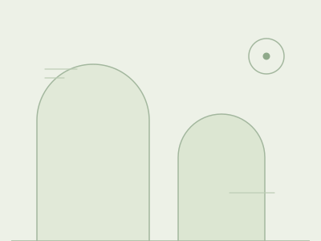

Klinik Gigi & Kesehatan Mulut di Cicurug
Perawatan gigi yang terasa lebih tenang.
Mulai dari konsultasi, pahami pilihan perawatan, dan ajukan jadwal yang sesuai.
Jadwal dikonfirmasi oleh admin klinik.

Media klinik akan ditambahkanKenali tim dokter
Nama & jadwal praktik
Bicarakan biayanya
Minta estimasi ke admin
Perawatan keluarga
Konsultasikan kebutuhan Anda
Nyangkowek, Cicurug
Rute langsung di Google Maps
Perawatan yang Anda butuhkan
Mulai dari pemeriksaan rutin hingga konsultasi perawatan lanjutan. Kebutuhan tindakan ditentukan bersama dokter setelah pemeriksaan.
Layanan Utama
Pemeriksaan Gigi Rutin & Konsultasi
Ceritakan keluhan Anda dan pahami kondisi gigi serta gusi melalui pemeriksaan. Diskusikan pilihan penanganan dengan bahasa yang mudah dipahami.
- check Pemeriksaan kondisi gigi dan gusi
- check Diskusi pilihan tindakan dan kebutuhan biaya
- check Edukasi kebersihan mulut mandiri harian
Scaling (Pembersihan Karang Gigi)
Pembersihan plak dan karang gigi sesuai hasil pemeriksaan dokter.
Tambal Gigi Estetik
Diskusikan penanganan gigi berlubang dan pilihan bahan tambalan.
Cabut Gigi & Bedah Minor
Penilaian kebutuhan pencabutan, pilihan penanganan, dan perawatan setelah tindakan.
Perawatan Gigi Anak (Pedodonti)
Pemeriksaan dan edukasi kesehatan gigi sesuai usia serta kebutuhan si kecil.
Perawatan Estetik, Bleaching & Veneer
Konsultasikan pilihan perawatan tampilan gigi, indikasi, risiko, dan biayanya.
Sudah tahu yang Anda butuhkan?
Ajukan kunjungan sekarang. Admin akan mengonfirmasi dokter, tanggal, dan jam yang tersedia untuk Anda.
Lebih tenang ketika
tahu rencananya.
Estimasi biaya bergantung pada kondisi gigi dan tindakan yang dibutuhkan. Tanyakan estimasi awal ke admin sebelum merencanakan kunjungan.
Estimasi dari admin bersifat awal, bukan biaya final. Dokter menentukan tindakan yang dibutuhkan setelah pemeriksaan.
Pemeriksaan & konsultasi
Penilaian awal kondisi gigi dan rencana perawatan.
Scaling gigi
Biaya menyesuaikan kondisi serta kebutuhan pembersihan.
Tambal gigi
Dipengaruhi luas kerusakan, jumlah gigi, dan pilihan bahan.
Cabut gigi
Perlu pemeriksaan; kasus kompleks dapat membutuhkan rujukan.
Setiap tombol “Tanya estimasi” membuka WhatsApp dengan pertanyaan yang sudah disiapkan. Angka dari admin adalah gambaran awal, bukan biaya akhir perawatan.
Untuk perawatan anak, estetika, atau kebutuhan lainnya, diskusikan langsung dengan admin.
Datang dengan tenang, pulang dengan lebih percaya diri.
Tidak harus sudah tahu tindakan apa yang dibutuhkan. Mulailah dari bercerita tentang keluhan, kebiasaan, dan kekhawatiran Anda saat berkonsultasi.
Sampaikan hal yang membuat Anda cemas
Pengalaman ke dokter gigi setiap orang berbeda. Beri tahu dokter jika Anda merasa khawatir atau memiliki pengalaman yang kurang nyaman.
Pahami pilihan perawatannya
Tanyakan tujuan tindakan, alternatif, risiko, dan estimasi biaya agar Anda dapat mengambil keputusan yang sesuai.
Bawa informasi kesehatan yang relevan
Sampaikan riwayat alergi, obat yang sedang diminum, atau kondisi kesehatan lain kepada dokter sebelum tindakan.
Konfirmasikan jadwal sebelum berangkat
Ajukan dokter dan waktu yang Anda inginkan. Admin akan mengonfirmasi jadwal kunjungan sebelum Anda berangkat.
Alur kunjungan yang mudah.
Tiga langkah praktis menuju perawatan gigi di Cicurug. Jadwal baru pasti setelah admin mengonfirmasi.
-
Pilih layanan
Tentukan kebutuhan perawatan atau konsultasi awal untuk Anda maupun keluarga melalui katalog layanan di atas.
-
Ajukan waktu
Pilih dokter, tanggal, dan preferensi waktu pada formulir. Permintaan dikirim melalui WhatsApp, lalu dikonfirmasi oleh admin.
-
Konsultasi & perawatan
Datang sesuai jadwal yang sudah dikonfirmasi. Diskusikan kondisi gigi dan pilihan perawatan langsung dengan dokter.
Senyum sehat dimulai
dari rasa percaya.
Kenali tim dokter Hade Medika — dokter gigi, dokter umum, dan dokter estetika. Jadwal praktik berikut berasal dari materi klinik dan akan dikonfirmasi kembali oleh admin sesuai kebutuhan kunjungan.
Tim dokter Hade Medika: drg. Eka, drg. Hanif, drg. Irsyad, drg. Firda, drg. Linni, drg. Shania, drg. Isna, dr. Hamidi, dr. Kirei, dan dr. Nadelia. Jadwal praktik dikonfirmasi oleh admin melalui WhatsApp 0813-5959-9996.
Jadwal dokter dapat berubah. Jadwal praktik hari Minggu drg. Shania (minggu kedua) dan drg. Isna (minggu keempat) perlu dikonfirmasi admin sebelum Anda berangkat.
Kepercayaan tumbuh dari pengalaman nyata.
Ulasan pasien Hade Medika Cicurug dikelola langsung di Google Maps. Anda dapat membaca pengalaman pasien lain di sana sebelum merencanakan kunjungan.
Lihat pengalaman pasien di Google Maps Ulasan dan rating dikelola oleh Google Maps. Anda juga dapat menulis ulasan di sana setelah berkunjung.Jadwalkan kunjungan Anda.
Isi formulir untuk menyiapkan pesan permintaan kunjungan. Anda akan meninjau ringkasan terlebih dahulu; jadwal baru berlaku setelah dikonfirmasi admin klinik.
Ingin tanya dulu?
Belum yakin memilih dokter, tanggal, atau waktu? Hubungi admin untuk menanyakan jadwal, kebutuhan kunjungan, atau estimasi biaya awal.
local_parking Sebelum berangkat
- check_circle Pastikan dokter, tanggal, dan jam sudah dikonfirmasi admin.
- check_circle Tanyakan dokumen yang perlu dibawa untuk kunjungan pertama.
- check_circle Sampaikan kebutuhan akses khusus sebelum datang.
Pertanyaan yang Sering Diajukan
Jawaban seputar prosedur, kenyamanan, dan administrasi di Hade Medika Cicurug.
Sensasi selama scaling bisa berbeda pada setiap pasien, bergantung pada kondisi gigi dan gusi. Sampaikan jika Anda memiliki gigi sensitif atau merasa tidak nyaman, dan diskusikan pilihan penanganannya dengan dokter.
Belum. Formulir menyiapkan pesan permintaan kunjungan yang perlu Anda kirim melalui WhatsApp. Admin akan mengonfirmasi dokter, tanggal, dan jam kunjungan sebelum Anda berangkat. Preferensi waktu membantu admin mencarikan jadwal dan bukan jaminan jam tertentu.
Ceritakan usia anak, keluhannya, dan pengalaman perawatan sebelumnya kepada admin serta dokter. Dokter perlu menilai kondisi dan kesiapan anak untuk menentukan pendekatan, tindakan, atau rujukan yang sesuai.
Informasi kerja sama BPJS/asuransi dan metode pembayaran perlu dikonfirmasi langsung kepada admin. Tanyakan apakah layanan yang Anda butuhkan ditanggung, dokumen yang harus dibawa, dan komponen biaya yang tidak termasuk.
Lokasi & Jam Praktik
Alamat Klinik
Jl. Raya Cidahu, RT.01/RW.06, Nyangkowek,
Kecamatan Cicurug, Kabupaten Sukabumi,
Jawa Barat 43359
Waktu Kunjungan
Jam kunjungan mengikuti jadwal dokter dan perlu dikonfirmasi oleh admin.
Lihat jadwal setiap dokterPeta interaktif disediakan Google. Jika tidak termuat, gunakan tombol petunjuk rute atau hubungi admin untuk memastikan titik lokasi.
Informasi privasi & penggunaan website
Formulir ini tidak menyimpan data ke database atau penyimpanan browser. Nama, nomor kontak, pilihan kunjungan, dan catatan yang Anda tulis disusun menjadi pesan WhatsApp. Data baru diteruskan ke WhatsApp saat Anda memilih tautan untuk melanjutkan; Anda tetap perlu mengirim pesannya di WhatsApp.
Jangan tuliskan NIK, hasil pemeriksaan, atau riwayat kesehatan terperinci di formulir. Penggunaan WhatsApp, Google Maps, dan font teks dari Google melibatkan layanan pihak ketiga dengan kebijakan privasinya masing-masing. Konten yang dimuat dari layanan tersebut dapat menerima informasi teknis seperti alamat IP.
Informasi perawatan pada website bersifat umum, bukan diagnosis atau jaminan hasil. Untuk perubahan permintaan kunjungan atau pertanyaan mengenai data yang telah dikirim, hubungi admin klinik melalui WhatsApp.